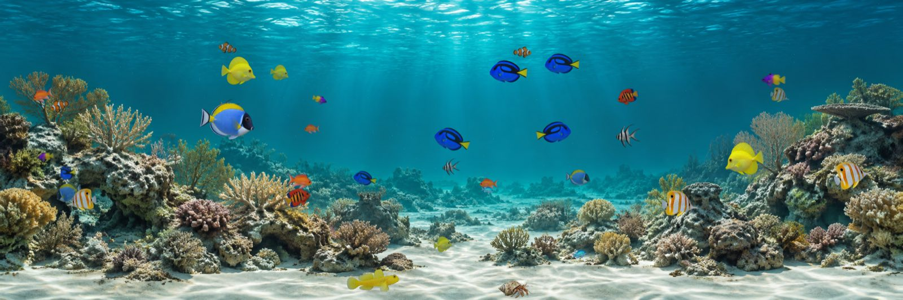
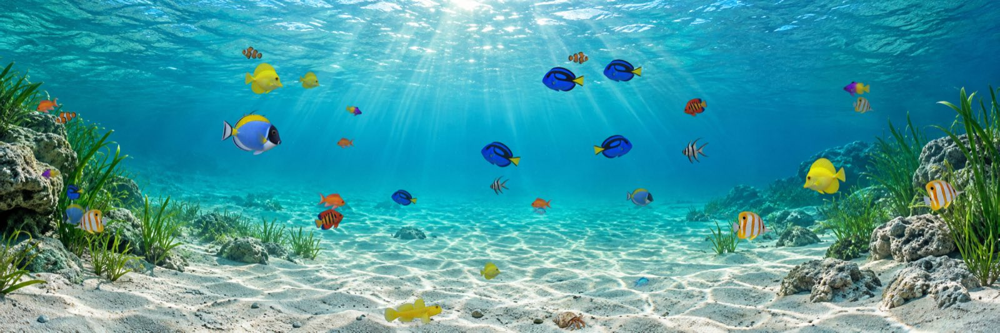
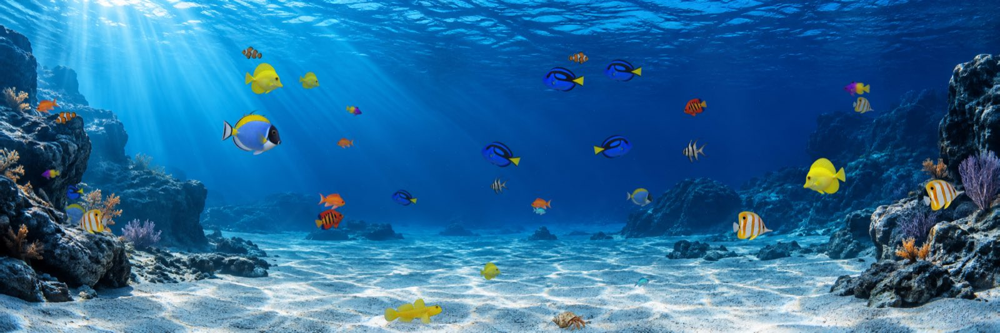

A native Metal aquarium for your Mac
Aquarium turns your desktop into a calm, living reef. Species-aware fin motion, a shared aquarium world across up to three displays, and a quiet control panel that stays out of your way.

Two ways to watch
Desktop mode runs quietly behind your other windows, so the aquarium lives on your desktop while you work. Interactive mode brings the aquarium to the front for a focused view — fish respond to your pointer, and pressing Esc returns you to desktop mode instantly.
Aquarium's renderer gives each species its own fin articulation: a stable head and forward body, a rear-body flex that grows toward the tail, and a travelling tail wave with a natural phase lag, so motion looks purposeful rather than mechanical.
Backgrounds
Tropical Reef is included free. Seagrass Lagoon and Blue Rock Cove are part of Aquarium Pro.


Free vs. Aquarium Pro
Free
- One active display
- Tropical Reef background
- Clownfish, blue tang, and yellow tang, with individual enable and quantity controls
- Watchman goby and hermit crab foreground residents
- Pointer attraction, brightness, idle presentation, and pause
- Gentle, Balanced, or Vivid rendering quality
Aquarium Pro
- One, two, or three active displays
- All ten swimming varieties and both foreground residents
- Tropical Reef, Seagrass Lagoon, and Blue Rock Cove backgrounds, plus future additions
- Ultra rendering quality
- All future fish and background updates, at no extra cost
Aquarium Pro is a one-time purchase that unlocks these features for good — there is no subscription. It costs £1.99 in the UK; the App Store shows the price in your local currency. You can restore a previous purchase at any time from the About Aquarium window. See Restore Purchases for steps.
System requirements
- macOS 14 Sonoma or later
- A Mac with Metal support
On the Mac App Store
Aquarium is coming to the Mac App Store. This page will link to the store listing once it is live.
More
Need help, or want to restore a purchase? Visit Support. Want to know what data Aquarium collects (none)? Read the Privacy policy.